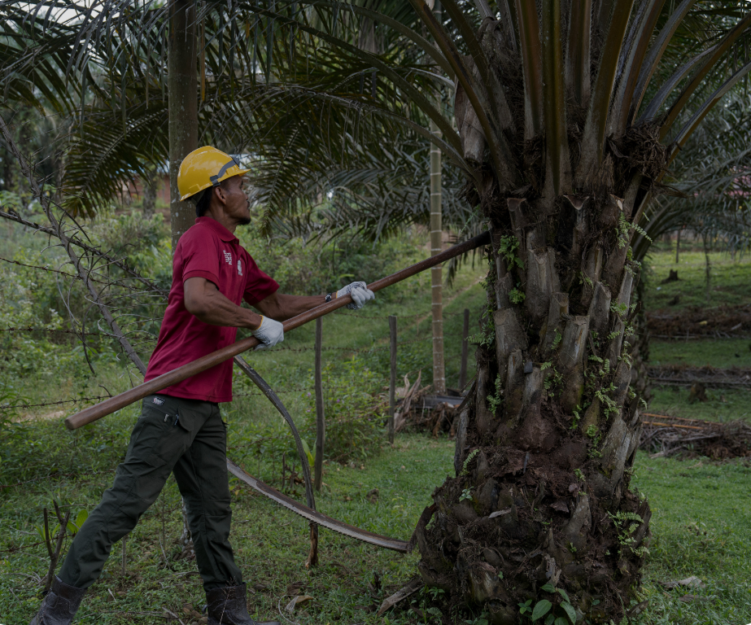

Farmers are actively involved in the mapping process. We have developed an integrated dashboard that brings farmer and plantation data together, making farm locations, land areas, and farmer profiles easier to track and understand. The dashboard supports more effective monitoring, planning, and informed decision-making.

12,700+
FARMERS MAPPED
16,500+ ha
LAND MAPPED
Building the data foundation to improve traceability, farm management, and informed decision-making across Riau.
“At first, we thought the technology would only make things more complicated. Now, we see how it can help us understand and protect our own farms.”
— Indra Surya Darma, AGPSM Farmers Group Manager
"I used to roughly estimate my farm boundaries. Now, with just my phone, I can identify the farm zones and distinguish safe areas from red zones. My farm is clearer and easier to protect."